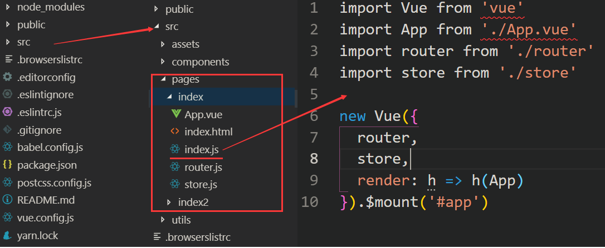

利用 vue-cli 搭建的项目大都是单页面应用项目，对于简单的项目，单页面就能满足要求。但对于有多个子项目的应用，如果创建多个单页面，显示有点重复，特别是 node_modules 会有多份相同的。如果全部放到单页面项目下，又显得有点乱，这时候通过改造 vue-cli 搭建的项目为多页面，就是一个比较好的解决方法。
如何改造单页面 vue.js 项目为多页面项目？下面是这次改造的具体过程。
一、创建单页面 vue.js 项目
这里直接使用官方提供的脚手架 vue-cli3 创建，具体的过程请参考「vue-cli3.0 升级记录」
二、多页面配置
1、添加配置文件
在项目根路径下( 与 package.json 同目录 )添加 vue.config.js，内容如下：
1 module.exports = {
2 pages: {
3 index: {
4 // 入口js的路径
5 entry: './src/main',
6 // 页面模板路径
7 template: './src/public/index.html'
8 }
9 }
10 }
上面的配置其实就是 vue-cli 建立项目的默认配置，如果增加页面，在 pages 节点下添加配置即可。但这种方式，每次增加一个新页面，就需要手动添加节点，这种重复的事情显然不智能。下面继续改造。
2、调整项目结构
要自动化，那么就需要按定一种规则把页面组织下。如把所有路由页面都放到 src/pages 目录下，改造后的结构如下：

3、编写自动配置文件
在项目根路径下( 与 package.json 同目录 )添加 vue.util.js，内容如下：
1 const path = require('path')
2 const glob = require('glob')
3 const START_PATH = '/src/pages/'
4 const PAGE_PATH = path.resolve(__dirname, '.' + START_PATH)
5
6 exports.pages = function () {
7 var entryFiles = glob.sync(PAGE_PATH + '/**/*.html')
8 var obj = {}
9 entryFiles.forEach((filePath) => {
10 var dirPath = filePath.substring(0, filePath.lastIndexOf('/'))
11 var dirName = dirPath.substring(dirPath.lastIndexOf('/') + 1)
12 var filename = filePath.substring(filePath.lastIndexOf(START_PATH) + START_PATH.length, filePath.lastIndexOf('/'))
13 if (filename.endsWith(dirName)) {
14 obj[filename] = {
15 entry: filePath.substring(0, filePath.lastIndexOf('.html')) + '.js',
16 template: filePath.substring(0, filePath.lastIndexOf('.html')) + '.html'
17 }
18 }
19 })
20 return obj
21 }
在 vue.config.js 使用上面的配置
1 const utils = require('./vue.util')
2
3 module.exports = {
4 pages: utils.pages()
5 }
三、测试下
yarn dev浏览器输入：
http://localhost:8080/index.html 和 http://localhost:8080/index2.html
OK，多页面配置完成